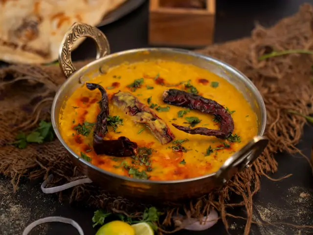

Australia
Australia Fiji
Fiji Nigeria
Nigeria Mexico
Mexico


Pudina-Dhaniya
MediumBanane ke liye Pudina, dhaniya, hari mirch, nimbu, namak.
Sab kuch peeso, nimbu daalo.
Kis ke saath Samosa, pakode, sandwich, tikki

Vegetarian Flavors Across Continents
BY DWON
Food from six continents. Written like a friend would.
01 · From the kitchen
Foreword
Slate & Saffron began with a simple thought: the whole world cooks beautiful vegetarian food, and most of it never reaches your table.
This menu is a tour of it, one page for every corner. Pick a dish, open the recipe and cook.
Take your time. Turn the pages slowly, the way you would at a restaurant table.
“Cooking is how I travel without leaving the kitchen.”
Contents
Dals, curries, dosas and street food
 Paneer Butter MasalaMulayam paneer, tamatar aur makkhan ki reshmi gravy mein.35 min
Paneer Butter MasalaMulayam paneer, tamatar aur makkhan ki reshmi gravy mein.35 min Dal MakhaniSabut urad aur rajma ki makkhan wali, dheemi aanch ki dal.70 min
Dal MakhaniSabut urad aur rajma ki makkhan wali, dheemi aanch ki dal.70 min Masala DosaKarara sunehra dosa aur masaledar naram aloo.40 min
Masala DosaKarara sunehra dosa aur masaledar naram aloo.40 min Veg BiryaniKhushbu daar chawal aur masaledar sabziyon ki parat wali biryani.60 min
Veg BiryaniKhushbu daar chawal aur masaledar sabziyon ki parat wali biryani.60 min Mumbai Pav BhajiMakkhan wali masli hui sabzi aur sika hua pav.40 min
Mumbai Pav BhajiMakkhan wali masli hui sabzi aur sika hua pav.40 min Chole BhatureGehre masale ke chole aur phooli hui sunehri bhature.75 min
Chole BhatureGehre masale ke chole aur phooli hui sunehri bhature.75 min Gulab JamunGulab ki chashni mein doobe naram khoye ke gole.45 min
Gulab JamunGulab ki chashni mein doobe naram khoye ke gole.45 minNoodles, dumplings and rolls
 Vegetable Pad ThaiThailand ke khatte-meethe, moongfali wale rice noodles.25 min
Vegetable Pad ThaiThailand ke khatte-meethe, moongfali wale rice noodles.25 min Veg MomosRaseeli sabziyon se bhare Himalaya ke steam momos.50 min
Veg MomosRaseeli sabziyon se bhare Himalaya ke steam momos.50 min JapchaeRangeen sabziyon wale chamakdar Korean glass noodles.30 min
JapchaeRangeen sabziyon wale chamakdar Korean glass noodles.30 min Vegetable Spring RollsKarari sabziyon se bhare sunehre rolls.45 min
Vegetable Spring RollsKarari sabziyon se bhare sunehre rolls.45 min Avocado Cucumber MakiTaazi sabziyon wale saaf-suthre Japanese chawal rolls.45 min
Avocado Cucumber MakiTaazi sabziyon wale saaf-suthre Japanese chawal rolls.45 min FalafelHerbs wale karare kabuli chane ke pakode.30 min
FalafelHerbs wale karare kabuli chane ke pakode.30 minPasta, bakes and slow lunches
 Margherita PizzaKarare base pe tamatar, mozzarella aur basil.40 min
Margherita PizzaKarare base pe tamatar, mozzarella aur basil.40 min Mushroom RisottoMalaidar chawal aur bhune mushroom, dheeme dheeme paka hua.45 min
Mushroom RisottoMalaidar chawal aur bhune mushroom, dheeme dheeme paka hua.45 min RatatouilleGarmiyon ki sabziyon ki rangeen French dish.60 min
RatatouilleGarmiyon ki sabziyon ki rangeen French dish.60 min Greek SpanakopitaPalak aur feta ki karari filo parat wali pie.70 min
Greek SpanakopitaPalak aur feta ki karari filo parat wali pie.70 min Vegetable PaellaKesar wale chawal aur taaza sabziyon ka kadhai bhar pakwan.50 min
Vegetable PaellaKesar wale chawal aur taaza sabziyon ka kadhai bhar pakwan.50 min French Onion SoupDheeme pakaye meethe pyaaz aur pighle cheese ka garam soup.75 min
French Onion SoupDheeme pakaye meethe pyaaz aur pighle cheese ka garam soup.75 min Vegetarian MoussakaBaingan, aloo aur masoor ki dal ke parat wali bake.90 min
Vegetarian MoussakaBaingan, aloo aur masoor ki dal ke parat wali bake.90 minClay pots and bold red spice
 KoshariChawal, dal aur pasta, upar teekha tamatar aur karara pyaaz.50 min
KoshariChawal, dal aur pasta, upar teekha tamatar aur karara pyaaz.50 min Moroccan Vegetable TagineGaram masalon wali dheemi aanch ki Morocco ki sabziyan.60 min
Moroccan Vegetable TagineGaram masalon wali dheemi aanch ki Morocco ki sabziyan.60 min Nigerian Vegetable Jollof RiceWest Africa ka dhuandaar ek-bartan wala tamatar chawal.50 min
Nigerian Vegetable Jollof RiceWest Africa ka dhuandaar ek-bartan wala tamatar chawal.50 min Injera with Vegetarian Vegetable PlatterKhatti injera par rangeen dal-sabzi ki bhari thali.60 min
Injera with Vegetarian Vegetable PlatterKhatti injera par rangeen dal-sabzi ki bhari thali.60 min Shiro Wat, Ethiopian Chickpea StewPise chane ke aate ki gaadhi, masaledaar Ethiopian dal.35 min
Shiro Wat, Ethiopian Chickpea StewPise chane ke aate ki gaadhi, masaledaar Ethiopian dal.35 min Harira, Vegetarian VersionTamatar, dal aur chane ka khushbudar Moroccan soup.60 min
Harira, Vegetarian VersionTamatar, dal aur chane ka khushbudar Moroccan soup.60 minTacos, corn and comfort
 Vegetarian TacosMasaledar chane aur nimbu ke saath naram tortilla.25 min
Vegetarian TacosMasaledar chane aur nimbu ke saath naram tortilla.25 min Vegetarian EnchiladasRajma aur sabziyon se bhare tortilla, lal sauce mein.50 min
Vegetarian EnchiladasRajma aur sabziyon se bhare tortilla, lal sauce mein.50 min Guacamole with Tortilla ChipsNimbu aur dhaniye wali malaidar avocado dip.10 min
Guacamole with Tortilla ChipsNimbu aur dhaniye wali malaidar avocado dip.10 min Elote, Mexican Street CornAanch pe bhuna bhutta, cheese, nimbu aur mirch ke saath.20 min
Elote, Mexican Street CornAanch pe bhuna bhutta, cheese, nimbu aur mirch ke saath.20 min Veggie Burger with Sweet Potato FriesRajma-chane ki tikki wala burger aur kurkure shakarkandi fries.50 min
Veggie Burger with Sweet Potato FriesRajma-chane ki tikki wala burger aur kurkure shakarkandi fries.50 min Canadian Poutine, Vegetarian Gravy VersionKarari fries, cheese curds aur garam sabzi gravy.40 min
Canadian Poutine, Vegetarian Gravy VersionKarari fries, cheese curds aur garam sabzi gravy.40 min Mac and CheeseMalaidar gaadhi cheese sauce mein macaroni.25 min
Mac and CheeseMalaidar gaadhi cheese sauce mein macaroni.25 minCorn, beans and Andean grains
 Arepas with Black Beans and CheesePighle cheese se bhari karari makke ki tikki.30 min
Arepas with Black Beans and CheesePighle cheese se bhari karari makke ki tikki.30 min Pao de QueijoTapioca aur cheese ki hawadaar, chewy goliyan.45 min
Pao de QueijoTapioca aur cheese ki hawadaar, chewy goliyan.45 min Acai BowlGaadhi acai smoothie, phal aur granola ke saath.10 min
Acai BowlGaadhi acai smoothie, phal aur granola ke saath.10 min HumitasTaaze makke aur pyaaz ki naram, bhaap mein pakki potliyan.70 min
HumitasTaaze makke aur pyaaz ki naram, bhaap mein pakki potliyan.70 min Vegetarian EmpanadasCheese aur corn se bhari haath se modi Argentina ki pastry.60 min
Vegetarian EmpanadasCheese aur corn se bhari haath se modi Argentina ki pastry.60 min Papa a la HuancainaUbale aloo, peeli mirch aur cheese ki malaidar sauce mein.30 min
Papa a la HuancainaUbale aloo, peeli mirch aur cheese ki malaidar sauce mein.30 minBrunches, pies and island roots
 Smashed Avocado ToastMasali hui avocado, nimbu aur mirch ke saath khasta toast.10 min
Smashed Avocado ToastMasali hui avocado, nimbu aur mirch ke saath khasta toast.10 min Halloumi BurgerSeka halloumi, tamatar aur beetroot ka Aussie-style burger.25 min
Halloumi BurgerSeka halloumi, tamatar aur beetroot ka Aussie-style burger.25 min Mushroom PieGaadhi mushroom gravy bhari garam pie.60 min
Mushroom PieGaadhi mushroom gravy bhari garam pie.60 min Roast Pumpkin and Feta SaladBhuna kaddu, feta aur hare patton ki halki salad.40 min
Roast Pumpkin and Feta SaladBhuna kaddu, feta aur hare patton ki halki salad.40 min Sweet Potato with Macadamia CrumbleBhuni shakarkandi, upar macadamia aur herbs ka karara chura.45 min
Sweet Potato with Macadamia CrumbleBhuni shakarkandi, upar macadamia aur herbs ka karara chura.45 min Australian Damper with Herb ButterSunehri parat wali Australia ki saadi bread.45 min
Australian Damper with Herb ButterSunehri parat wali Australia ki saadi bread.45 min0% alcohol · six of twelve
 Aam PannaBhune kachche aam ka khatta-meetha garmi wala drink.25 min
Aam PannaBhune kachche aam ka khatta-meetha garmi wala drink.25 min Masala ShikanjiBhune jeere aur kale namak wala masaledar nimbu paani.5 min
Masala ShikanjiBhune jeere aur kale namak wala masaledar nimbu paani.5 min Mango LassiPake aam wali gaadhi thandi dahi ki lassi.5 min
Mango LassiPake aam wali gaadhi thandi dahi ki lassi.5 min Thai Iced TeaBarf pe tez masala chai aur malaidar meetha doodh.20 min
Thai Iced TeaBarf pe tez masala chai aur malaidar meetha doodh.20 min Moroccan Mint TeaTaaze pudine pe daali meethi green tea.10 min
Moroccan Mint TeaTaaze pudine pe daali meethi green tea.10 min KarkadeEgypt ka gehra laal khatta gudhal ka drink.15 min
KarkadeEgypt ka gehra laal khatta gudhal ka drink.15 minA short guide
If you only cook three
Thank you
Every recipe here is written the way a friend would tell it across the kitchen counter. Short steps, simple words, and a desi swap when an ingredient is hard to find.
Cook one tonight, then tell someone about it.
No idea what to cook? Check your fridge →
225 vegetarian recipes, 12 mocktails and six continents are waiting in the book. Start anywhere: pick a mood, open your fridge, or go region by region.
Colophon
Set in Great Vibes, Cinzel and Jost. Photographs are by free-to-use photographers, with their names on the credits page. Recipes are written in plain Hinglish, with a desi swap wherever an ingredient is hard to find.
Every dish here is vegetarian. No meat, fish, egg or gelatin, ever.
Photo credits →Cook the world, one page at a time.

02 · Our story
We collect vegetarian dishes from around the world and write them simply, with a desi swap for anything hard to find at home.
Check what's in your fridge →03 · Pick by mood
Dinner on the table before the chai cools.
 IndiaPoha20 min · EasyMedium
IndiaPoha20 min · EasyMedium MexicoGuacamole with Tortilla Chips10 min · EasyMedium
MexicoGuacamole with Tortilla Chips10 min · EasyMedium AustraliaCheese and Vegemite Toastie10 min · EasyMild
AustraliaCheese and Vegemite Toastie10 min · EasyMild IndiaBombay Veg Sandwich20 min · EasySpicy
IndiaBombay Veg Sandwich20 min · EasySpicyWarm bowls for slow evenings.
 CanadaCanadian Poutine, Vegetarian Gravy Version40 min · MediumMild
CanadaCanadian Poutine, Vegetarian Gravy Version40 min · MediumMild IndiaDal Makhani70 min · MediumMedium
IndiaDal Makhani70 min · MediumMedium Peru & BoliviaSopa de Quinoa40 min · EasyMild
Peru & BoliviaSopa de Quinoa40 min · EasyMild AustraliaHalloumi Burger25 min · EasyMild
AustraliaHalloumi Burger25 min · EasyMildChilli, smoke and a little drama.
 IndiaPaneer Paratha35 min · MediumSpicy
IndiaPaneer Paratha35 min · MediumSpicy SpainPatatas Bravas40 min · EasySpicy
SpainPatatas Bravas40 min · EasySpicy IndiaMisal Pav60 min · HardSpicy
IndiaMisal Pav60 min · HardSpicy IndiaVada Pav50 min · MediumSpicy
IndiaVada Pav50 min · MediumSpicyFresh, bright and easy on the stomach.
 TunisiaTunisian Lablabi50 min · EasyMild
TunisiaTunisian Lablabi50 min · EasyMild Pacific IslandsSweet Potato and Coconut Bowl35 min · EasyMild
Pacific IslandsSweet Potato and Coconut Bowl35 min · EasyMild IndiaIdli Sambar60 min · MediumMild
IndiaIdli Sambar60 min · MediumMild ItalyMinestrone45 min · EasyMild
ItalyMinestrone45 min · EasyMild04 · Explore by continent
Point at a panel to open it. Click to step inside.
 01AsiaSaffron, smoke and street stalls125 recipes →
01AsiaSaffron, smoke and street stalls125 recipes → 02EuropeTomatoes, herbs and slow lunches20 recipes →
02EuropeTomatoes, herbs and slow lunches20 recipes → 03AfricaClay pots and bold red spice20 recipes →
03AfricaClay pots and bold red spice20 recipes → 04North AmericaTacos, corn and maple mornings20 recipes →
04North AmericaTacos, corn and maple mornings20 recipes → 05South AmericaCorn, beans and Andean grains20 recipes →
05South AmericaCorn, beans and Andean grains20 recipes → 06Australia & IslandsSunlit coasts, tropical roots and island fire20 recipes →
06Australia & IslandsSunlit coasts, tropical roots and island fire20 recipes →05 · Indian kitchen
Dals, parathas, dosas, dhoklas and street food. Pick a region and cook.
 Punjabi Chole50 min · MediumSpicy
Punjabi Chole50 min · MediumSpicy Paneer Butter Masala35 min · MediumMedium
Paneer Butter Masala35 min · MediumMedium Dal Tadka30 min · EasySpicy
Dal Tadka30 min · EasySpicy Palak Paneer35 min · MediumMedium
Palak Paneer35 min · MediumMedium Kadai Paneer30 min · MediumMedium
Kadai Paneer30 min · MediumMedium Shahi Paneer40 min · MediumMedium
Shahi Paneer40 min · MediumMedium Matar Paneer35 min · EasyMedium
Matar Paneer35 min · EasyMedium Paneer Tikka Masala45 min · MediumMedium
Paneer Tikka Masala45 min · MediumMedium Malai Kofta60 min · HardMildDal Makhani70 min · MediumMedium
Malai Kofta60 min · HardMildDal Makhani70 min · MediumMedium Chana Masala45 min · EasySpicy
Chana Masala45 min · EasySpicy Rajma Masala60 min · MediumMedium
Rajma Masala60 min · MediumMedium Aloo Gobi35 min · EasyMedium
Aloo Gobi35 min · EasyMedium Dum Aloo45 min · MediumMedium
Dum Aloo45 min · MediumMedium Aloo Matar30 min · EasyMedium
Aloo Matar30 min · EasyMedium Jeera Aloo25 min · EasyMedium
Jeera Aloo25 min · EasyMedium Baingan Bharta40 min · MediumSpicy
Baingan Bharta40 min · MediumSpicy Bharwa Baingan40 min · MediumMedium
Bharwa Baingan40 min · MediumMedium Bhindi Masala30 min · EasyMedium
Bhindi Masala30 min · EasyMedium Mix Vegetable Curry40 min · EasyMedium
Mix Vegetable Curry40 min · EasyMedium Vegetable Korma45 min · MediumMild
Vegetable Korma45 min · MediumMild Navratan Korma50 min · MediumMild
Navratan Korma50 min · MediumMild Vegetable Jalfrezi30 min · EasySpicy
Vegetable Jalfrezi30 min · EasySpicy Kadhi Pakora55 min · MediumMedium
Kadhi Pakora55 min · MediumMedium Amritsari Kulcha60 min · HardMild
Amritsari Kulcha60 min · HardMild Stuffed Paratha35 min · MediumSpicy
Stuffed Paratha35 min · MediumSpicy Aloo Paratha35 min · MediumMediumPaneer Paratha35 min · MediumSpicy
Aloo Paratha35 min · MediumMediumPaneer Paratha35 min · MediumSpicy Vegetable Pulao35 min · EasyMild
Vegetable Pulao35 min · EasyMild Chole Bhature75 min · HardMedium
Chole Bhature75 min · HardMedium Sarson da Saag75 min · MediumMedium
Sarson da Saag75 min · MediumMedium Makki di Roti40 min · HardMild
Makki di Roti40 min · HardMild Gobhi Paratha45 min · MediumSpicy
Gobhi Paratha45 min · MediumSpicy Mooli Paratha40 min · MediumSpicy
Mooli Paratha40 min · MediumSpicy
Langar wali Dal60 min · EasyMedium Pindi Chole60 min · MediumMild
Pindi Chole60 min · MediumMild Paneer Bhurji25 min · EasySpicy
Paneer Bhurji25 min · EasySpicy Gajar ka Halwa75 min · MediumMild
Gajar ka Halwa75 min · MediumMild Pinni45 min · MediumMild
Pinni45 min · MediumMild Meethe Chawal45 min · EasyMild
Meethe Chawal45 min · EasyMild Punjabi Lassi10 min · EasyMild
Punjabi Lassi10 min · EasyMild Masala Dosa40 min · HardMedium
Masala Dosa40 min · HardMedium Mysore Masala Dosa50 min · HardMildIdli Sambar60 min · MediumMild
Mysore Masala Dosa50 min · HardMildIdli Sambar60 min · MediumMild Medu Vada40 min · MediumMedium
Medu Vada40 min · MediumMedium Uttapam40 min · MediumMedium
Uttapam40 min · MediumMedium Vegetable Upma25 min · EasyMedium
Vegetable Upma25 min · EasyMedium Veg Biryani60 min · HardMild
Veg Biryani60 min · HardMild Lemon Rice25 min · EasyMedium
Lemon Rice25 min · EasyMedium Bisi Bele Bath60 min · MediumMild
Bisi Bele Bath60 min · MediumMild Rasam30 min · EasyMild
Rasam30 min · EasyMild Avial40 min · MediumMedium
Avial40 min · MediumMedium Curd Rice20 min · EasyMedium
Curd Rice20 min · EasyMedium Dhokla35 min · MediumMedium
Dhokla35 min · MediumMedium Khandvi40 min · HardMedium
Khandvi40 min · HardMedium Undhiyu75 min · HardMedium
Undhiyu75 min · HardMedium Dal Dhokli50 min · MediumMedium
Dal Dhokli50 min · MediumMedium Gujarati Kadhi30 min · EasyMedium
Gujarati Kadhi30 min · EasyMedium Methi Thepla30 min · EasyMedium
Methi Thepla30 min · EasyMedium Handvo60 min · MediumMedium
Handvo60 min · MediumMedium Sev Tameta nu Shaak20 min · EasyMedium
Sev Tameta nu Shaak20 min · EasyMedium Fafda Jalebi60 min · HardMild
Fafda Jalebi60 min · HardMild Patra70 min · HardMedium
Patra70 min · HardMedium Methi na Gota30 min · MediumMedium
Methi na Gota30 min · MediumMedium Mumbai Pav Bhaji40 min · EasyMediumPoha20 min · EasyMediumVada Pav50 min · MediumSpicyMisal Pav60 min · HardSpicyBombay Veg Sandwich20 min · EasySpicy
Mumbai Pav Bhaji40 min · EasyMediumPoha20 min · EasyMediumVada Pav50 min · MediumSpicyMisal Pav60 min · HardSpicyBombay Veg Sandwich20 min · EasySpicy Sabudana Khichdi25 min · EasyMedium
Sabudana Khichdi25 min · EasyMedium Thalipeeth35 min · MediumMedium
Thalipeeth35 min · MediumMedium Bharli Vangi45 min · MediumMild
Bharli Vangi45 min · MediumMild Matki Usal35 min · MediumMedium
Matki Usal35 min · MediumMedium Kothimbir Vadi45 min · MediumMedium
Kothimbir Vadi45 min · MediumMedium Puran Poli75 min · HardMild
Puran Poli75 min · HardMild Ukadiche Modak50 min · HardMild
Ukadiche Modak50 min · HardMild Sheera25 min · EasyMild
Sheera25 min · EasyMild Aamras15 min · EasyMild
Aamras15 min · EasyMild Gatte ki Sabzi55 min · HardMediumKadhi Pakora55 min · MediumMedium
Gatte ki Sabzi55 min · HardMediumKadhi Pakora55 min · MediumMedium Ker Sangri40 min · MediumMedium
Ker Sangri40 min · MediumMedium Bajre ki Roti30 min · HardMild
Bajre ki Roti30 min · HardMild Mirchi Vada35 min · MediumMild
Mirchi Vada35 min · MediumMild Pyaaz Kachori60 min · HardMedium
Pyaaz Kachori60 min · HardMedium Dal Baati Churma90 min · HardMild
Dal Baati Churma90 min · HardMild Panchmel Dal50 min · MediumMedium
Panchmel Dal50 min · MediumMedium Papad ki Sabzi25 min · EasyMedium
Papad ki Sabzi25 min · EasyMedium Mangodi ki Sabzi35 min · MediumMedium
Mangodi ki Sabzi35 min · MediumMedium Gatte ka Pulao55 min · MediumMild
Gatte ka Pulao55 min · MediumMild Mawa Kachori60 min · HardMild
Mawa Kachori60 min · HardMild Ghevar75 min · HardMild
Ghevar75 min · HardMild Malpua40 min · MediumMild
Malpua40 min · MediumMild Moong Dal Halwa70 min · HardMild
Moong Dal Halwa70 min · HardMild Churma Ladoo40 min · MediumMild
Churma Ladoo40 min · MediumMild Balushahi60 min · HardMild
Balushahi60 min · HardMild Aloo Posto30 min · MediumMedium
Aloo Posto30 min · MediumMedium Cholar Dal45 min · MediumMild
Cholar Dal45 min · MediumMild Shukto45 min · MediumMild
Shukto45 min · MediumMild Begun Bhaja20 min · EasyMedium
Begun Bhaja20 min · EasyMedium Dhokar Dalna60 min · HardMedium
Dhokar Dalna60 min · HardMedium Luchi30 min · MediumMild
Luchi30 min · MediumMild Chhanar Dalna40 min · MediumMild
Chhanar Dalna40 min · MediumMild Bengali Aloor Dom40 min · MediumMild
Bengali Aloor Dom40 min · MediumMild Mishti Doi45 min · MediumMild
Mishti Doi45 min · MediumMild Rasgulla60 min · HardMild
Rasgulla60 min · HardMild Sandesh30 min · MediumMild
Sandesh30 min · MediumMild Payesh45 min · EasyMildMumbai Pav Bhaji40 min · EasyMediumAmritsari Kulcha60 min · HardMildVada Pav50 min · MediumSpicyBombay Veg Sandwich20 min · EasySpicyChole Bhature75 min · HardMedium
Payesh45 min · EasyMildMumbai Pav Bhaji40 min · EasyMediumAmritsari Kulcha60 min · HardMildVada Pav50 min · MediumSpicyBombay Veg Sandwich20 min · EasySpicyChole Bhature75 min · HardMedium Pani Puri40 min · MediumMild
Pani Puri40 min · MediumMild Bhel Puri15 min · EasyMild
Bhel Puri15 min · EasyMild Sev Puri20 min · EasyMild
Sev Puri20 min · EasyMild Aloo Tikki Chaat35 min · MediumMedium
Aloo Tikki Chaat35 min · MediumMedium Papdi Chaat20 min · EasyMild
Papdi Chaat20 min · EasyMild Raj Kachori50 min · HardMild
Raj Kachori50 min · HardMild Punjabi Samosa60 min · HardMild
Punjabi Samosa60 min · HardMild
Punjabi kitchen
Ghee, makkhan te pyaar
Sarson da saag, makki di roti, parathe aur langar wali dal. Seedha Punjab ke ghar se.

Chutney wali gali
Har pradesh ki apni chutney. Mirch wali, meethi wali aur khatti wali, sab ek hi gali mein.
Banane ke liye Pudina, dhaniya, hari mirch, nimbu, namak.
Sab kuch peeso, nimbu daalo.
Kis ke saath Samosa, pakode, sandwich, tikki
Banane ke liye Pudina, anardana, jeera, hari mirch.
Anardana bhigo kar sab milakar peeso.
Kis ke saath Parathe, kachori, chaat
Banane ke liye Kasi mooli, adrak, hari mirch, nimbu.
Mooli ka paani nichod kar sab milao.
Kis ke saath Gobhi paratha, makki di roti
Banane ke liye Sookhi laal mirch, lehsun, namak, tel.
Sookhi mirch aur lehsun ko silbatte par kootlo.
Kis ke saath Bajre ki roti, dal baati
Banane ke liye Kachcha aam, pudina, hari mirch, jeera.
Sab kuch kootkar thoda namak daalo.
Kis ke saath Dal baati, gatte ki sabzi
Banane ke liye Imli, gud, saunth, jeera.
Imli ko ubaal kar gud ke saath pakao aur chhaan lo.
Kis ke saath Samosa, papdi chaat, pani puri
Banane ke liye Dhaniya, pudina, hari mirch, chaat masala.
Sab milakar mixer mein peeso.
Kis ke saath Bhel puri, sev puri, sandwich
Banane ke liye Taaza nariyal, bhuna chana, hari mirch, curry patte.
Peeskar rai-curry patte ka tadka lagao.
Kis ke saath Idli, dosa, medu vada
Banane ke liye Tamatar, lehsun, sookhi mirch, imli.
Tamatar ko bhun kar masale ke saath peeso.
Kis ke saath Dosa, uttapam, idli
Banane ke liye Curry patte, chana dal, imli, sookhi mirch.
Sab kuch bhun kar peeso.
Kis ke saath Idli, garam chawal aur ghee
Banane ke liye Bhuni moongfali, hari mirch, lehsun, dahi.
Moongfali ko peeso aur dahi milao.
Kis ke saath Thalipeeth, sabudana khichdi, vada
Banane ke liye Hari mirch, lehsun, bhuni moongfali, namak.
Silbatte par kootkar tel mein halka bhuno.
Kis ke saath Bhakri, misal pav, vada pav
Banane ke liye Bhune til, sookha nariyal, lehsun, mirch.
Sab kuch sookha bhun kar peeso.
Kis ke saath Bhakri, roti, pitla
Banane ke liye Kachcha aam, gud, saunf, mirch.
Aam ko gud ke saath dheemi aanch par pakao.
Kis ke saath Thepla, dhokla, khakhra
Banane ke liye Dhaniya, lehsun, hari mirch, nimbu.
Sab milakar mota peeso.
Kis ke saath Dhokla, handvo, fafda
Banane ke liye Pake tamatar, khajoor, panch phoron, cheeni.
Tamatar ko khajoor ke saath tel mein pakao.
Kis ke saath Luchi, papad, khichdi
06 · Seasonal collections

08 · Tonight
Tap what you have. We show what you can cook right now.
Open the fridge →The Sunday table